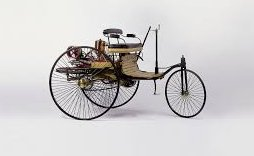

A car, or an automobile, is a motor vehicle with wheels. Most definitions of cars state that they run primarily on roads, seat one to eight people, have four wheels, and mainly transport people over cargo.[1][2] There are around one billion cars in use worldwide.
The French inventor Nicolas-Joseph Cugnot built the first steam-powered road vehicle in 1769, while the Swiss inventor François Isaac de Rivaz designed and constructed the first internal combustion-powered automobile in 1808. The modern car—a practical, marketable automobile for everyday use—was invented in 1886, when the German inventor Carl Benz patented his Benz Patent-Motorwagen. Commercial cars became widely available during the 20th century. The 1901 Oldsmobile Curved Dash and the 1908 Ford Model T, both American cars, are widely considered the first mass-produced[3][4] and mass-affordable[5][6][7] cars, respectively. Cars were rapidly adopted in the US, where they replaced horse-drawn carriages.[8] In Europe and other parts of the world, demand for automobiles did not increase until after World War II.[9] In the 21st century, car usage is still increasing rapidly, especially in China, India, and other newly industrialised countries.[10][11]

Cars have controls for driving, parking, passenger comfort, and a variety of lamps. Over the decades, additional features and controls have been added to vehicles, making them progressively more complex. These include rear-reversing cameras, air conditioning, navigation systems, and in-car entertainment. Most cars in use in the early 2020s are propelled by an internal combustion engine, fueled by the combustion of fossil fuels. Electric cars, which were invented early in the history of the car, became commercially available in the 2000s and are predicted to cost less to buy than petrol-driven cars before 2025.[12][13] The transition from fossil fuel-powered cars to electric cars features prominently in most climate change mitigation scenarios,[14] such as Project Drawdown's 100 actionable solutions for climate change.[15]
There are costs and benefits to car use. The costs to the individual include acquiring the vehicle, interest payments (if the car is financed), repairs and maintenance, fuel, depreciation, driving time, parking fees, taxes, and insurance.[16] The costs to society include maintaining roads, land-use, road congestion, air pollution, noise pollution, public health, and disposing of the vehicle at the end of its life. Traffic collisions are the largest cause of injury-related deaths worldwide.[17] Personal benefits include on-demand transportation, mobility, independence, and convenience.[18] Societal benefits include economic benefits, such as job and wealth creation from the automotive industry, transportation provision, societal well-being from leisure and travel opportunities. People's ability to move flexibly from place to place has far-reaching implications for the nature of societies.[19]
 There are costs and benefits to car use. The costs to the individual include acquiring the vehicle, interest payments (if the car is financed), repairs and maintenance, fuel, depreciation, driving time, parking fees, taxes, and insurance.[16] The costs to society include maintaining roads, land-use, road congestion, air pollution, noise pollution, public health, and disposing of the vehicle at the end of its life. Traffic collisions are the largest cause of injury-related deaths worldwide.[17] Personal benefits include on-demand transportation, mobility, independence, and convenience.[18] Societal benefits include economic benefits, such as job and wealth creation from the automotive industry, transportation provision, societal well-being from leisure and travel opportunities. People's ability to move flexibly from place to place has far-reaching implications for the nature of societies.[19]
There are costs and benefits to car use. The costs to the individual include acquiring the vehicle, interest payments (if the car is financed), repairs and maintenance, fuel, depreciation, driving time, parking fees, taxes, and insurance.[16] The costs to society include maintaining roads, land-use, road congestion, air pollution, noise pollution, public health, and disposing of the vehicle at the end of its life. Traffic collisions are the largest cause of injury-related deaths worldwide.[17] Personal benefits include on-demand transportation, mobility, independence, and convenience.[18] Societal benefits include economic benefits, such as job and wealth creation from the automotive industry, transportation provision, societal well-being from leisure and travel opportunities. People's ability to move flexibly from place to place has far-reaching implications for the nature of societies.[19]